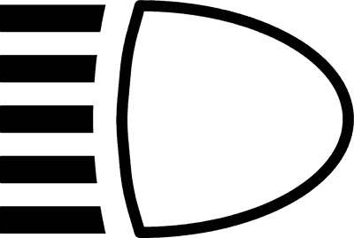
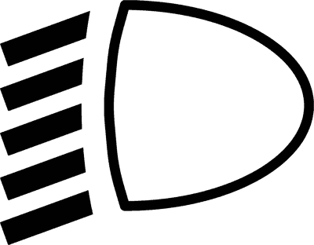
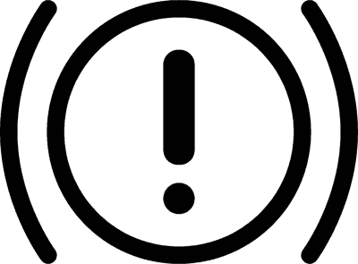
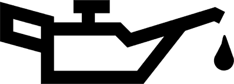
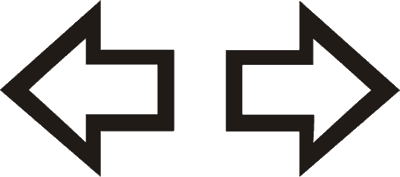
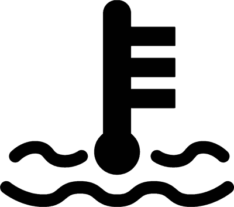
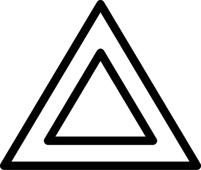

💡 المرجع المعتمد للدراسة والامتحان الوزاري
الباب 18: استخدام الأضواء ولمبات التابلوه والعواكس والتنبيه الصوتي
Capitolo 18: Uso delle luci, spie del cruscotto, catadiottri e avvisatore acustico
الدليل الهندسي الشامل لجميع منظومات الإضاءة في المركبة: الاستخدام الإلزامي للضوء المنخفض (Anabbaglianti) نهاراً وليلاً خارج المدن وداخل الأنفاق، حالات حظر الضوء العالي (Abbaglianti) لمنع الإبهار، فك شفرات لمبات لوحة العدادات الملونة (الأحمر للخطر الفوري، الأصفر للتحذير، الأزرق للضوء العالي)، أحكام أضواء الخطر الرباعية (4 Frecce)، والعواكس الضوئية السلبية (Catadiottri).
📊 296 سؤالاً وزارياً معتمداً ومطابقاً 100%
⚠️ 12 فخاً وزارياً دقيقاً
💡 14 بطاقة تفصيلية للمنظومة الضوئية والتابلوه
🎯 دقة 100% كود السير 2026
🎮
المختبر التفاعلي لمنظومة الإضاءة ولمبات التابلوه (Simulatore Luci & Quadro Spie)
الضوء الواطي الخافت (Luce Anabbagliante)
Art. 152 e 153 Codice della Strada
الشروط والواجبات القانونية:
- خارج المدن: تشغيل الضوء الواطي إلزامي نهاراً وليلاً على جميع الطرق السريعة والأوتوستراد.
- الأنفاق والطقس: إلزامي فوراً عند دخول أي نفق، وأثناء تساقط المطر أو الثلج أو وجود الضباب.
- الدراجات النارية: يلزم سائقو الدراجات بتشغيل الضوء الواطي دائماً داخل وخارج المدن.
🚨 فخ الامتحان المتكرر: استخدام الأضواء الواطية نهاراً إلزامي خارج المراكز العمرانية (Centri abitati) وفي جميع الأنفاق حتى لو كانت مضاءة (VERO)!
📖 البطاقات الفنية وقواعد منظومات الإضاءة والتابلوه
تحليل وزاري دقيق يوضح الحالات المعتمدة والأفخاخ الشائعة لكل موضوع

الضوء المنخفض ولمبته الخضراء
Proiettori anabbaglianti (Fig. 704)✅ الحالات والقواعد الصحيحة وزارياً (VERO):
- ✅ إلزامي الاستخدام طوال الـ 24 ساعة خارج المدن لجميع المركبات ذات المحرك.
- ✅ إلزامي داخل جميع الأنفاق (Gallerie) ليلاً ونهاراً حتى لو كانت مضاءة تماماً.
- ✅ لمبته في لوحة القيادة خضراء بأشعة متجهة للأسفل (Fig 704).
❌ الأفخاخ والادعاءات المضللة (FALSO):
- ❌ يزعم الاكتفاء بأضواء الموضع (Posizione) داخل الأنفاق المضاءة جيداً (FALSO، المنخفض إجباري).
- ❌ يزعم أن لونه أزرق في طبلون القيادة (FALSO، الأزرق خاص بالضوء العالي فقط).
فخ الامتحان: داخل أي نفق (Galleria)، سواء كان مضاءً كالشمس أو مظلماً، يلزم تشغيل الضوء المنخفض فوراً ولا تكفي أضواء الموضع إطلاقاً!

الضوء العالي وفوانيس العمق ولمبته الزرقاء
Proiettori abbaglianti (Fig. 705)✅ الحالات والقواعد الصحيحة وزارياً (VERO):
- ✅ يستخدم خارج المدن فقط عندما تكون الإضاءة العامة مفقودة أو غير كافية والطريق خالياً.
- ✅ يجب استبداله فوراً بالضوء المنخفض عند اقتراب مركبة في الاتجاه المعاكس أو تسبقك بمسافة قريبة.
- ✅ اللمبة الزرقاء الوحيدة في طبلون السيارة هي لمبة الضوء العالي (Fig 705).
❌ الأفخاخ والادعاءات المضللة (FALSO):
- ❌ يزعم جواز استخدامه داخل المدن إذا كان الشارع مظلماً جداً (ممنوع تماماً داخل المدن).
- ❌ يزعم إبقاءه مشتعلاً إذا كانت السيارة المقابلة تستخدم ضوءاً عالياً لمعاقبتها (تصرف خطير وممنوع).
فخ الامتحان: إذا بهرك سائق قادم بالضوء العالي، لا تقم بالرد عليه بتشغيل العالي، بل انظر نحو الحافة اليمنى للطريق وخفف سرعتك بحذر!

أضواء الخطر الرباعية التزامنية
Segnalazione luminosa di pericolo (4 frecce)✅ الحالات والقواعد الصحيحة وزارياً (VERO):
- ✅ تشغيل جميع ومضات الاتجاه الأربعة في وقت واحد عبر زر الطوارئ ذي المثلث الأحمر.
- ✅ إلزامية عند التوقف الاضطراري (Sosta di emergenza) في مسار السير أو حارة الطوارئ.
- ✅ إلزامية عند الاضطرار لفرملة حادة مفاجئة بسبب طابور سيارات متوقف أمامك لتنبيه الخلف.
❌ الأفخاخ والادعاءات المضللة (FALSO):
- ❌ يزعم استخدامها لتبرير الركن في الصف الثاني (Seconda fila) أمام محل تجاري (مخالفة مزدوجة).
- ❌ يزعم تشغيلها أثناء عبور التقاطعات المزدحمة لطلب الأولوية (FALSO).
فخ الامتحان: تشغيل الـ 4 Frecce لا يعطيك أي حق للركن الخاطئ في الصف الثاني، واستخدامها مقتصر حصرياً على مواقف الخطر والفرملة المفاجئة!
لمبة ضغط زيت المحرك الحمراء
Spia pressione olio motore (Fig. 697)✅ الحالات والقواعد الصحيحة وزارياً (VERO):
- ✅ تضيء باللون الأحمر على شكل إبريق زيت وتدل على نقص حرج في ضغط دورة تزييت المحرك.
- ✅ إذا أضاءت أثناء السير، يجب التوقف فوراً بأمان وإطفاء المحرك لتجنب تدميره بالكامل.
- ✅ تضيء طبيعياً عند فتح الكونتاكت وتنطفئ بمجرد دوران المحرك.
❌ الأفخاخ والادعاءات المضللة (FALSO):
- ❌ يزعم أنها تشير إلى ارتفاع درجة حرارة الزيت فقط ويمكن متابعة السير حتى أقرب ورشة (خطأ قاتل للمحرك).
- ❌ يزعم أنها تضيء باللون البرتقالي للتحذير من موعد الصيانة الدورية (FALSO، حمراء حرجة).
فخ الامتحان: إضاءة لمبة الزيت الحمراء أثناء السير تعني: توقف فوراً وأطفئ المحرك دون تأخير دقيقة واحدة!
لمبة حرارة سائل تبريد المحرك الحمراء
Spia temperatura liquido raffreddamento (Fig. 698)✅ الحالات والقواعد الصحيحة وزارياً (VERO):
- ✅ تضيء باللون الأحمر على شكل ميزان حرارة في سائل وتدل على سخونة مفرطة لسائل تبريد المحرك.
- ✅ توجب التوقف الفوري الآمن وإطفاء المحرك للتحقق من مستوى سائل الردياتير بعد أن يبرد.
- ✅ يحظر فتح غطاء الردياتير والمحرك ساخن جداً لتجنب اندفاع البخار الحارق.
❌ الأفخاخ والادعاءات المضللة (FALSO):
- ❌ يزعم أنها تشير إلى تجمد السائل فقط في فصل الشتاء (FALSO، تدل على فرط الحرارة).
- ❌ يزعم إمكانية تبريد المحرك بصب ماء مثلج مباشرة فوق المحرك الساخن (يسبب كسر رأس المحرك).
فخ الامتحان: إضاءة لمبة الحرارة توجب إيقاف المحرك، ولا يجوز مطلقاً فتح غطاء سائل التبريد إلا بعد هبوط الحرارة تفادياً للحروق الخطيرة!
لمبة فرامل اليد ونظام الفرامل الحمراء
Spia impianto frenante / freno a mano (Fig. 696)✅ الحالات والقواعد الصحيحة وزارياً (VERO):
- ✅ علامة تعجب حمراء بين قوسين: تدل إما على أن فرامل اليد مشدودة أو على انخفاض حاد بسائل الفرامل.
- ✅ إذا ظلت مضاءة بعد تنزيل فرامل اليد بالكامل، فإن ذلك يعني خللاً خطيراً في دورة الفرامل الهيدروليكية أو تآكل أقمشة الفرامل.
- ✅ توجب الفحص الفوري لأن مسافة الفرملة قد تزداد بشكل مفاجئ وخطير.
❌ الأفخاخ والادعاءات المضللة (FALSO):
- ❌ يزعم أنها تشير إلى انخفاض ضغط هواء الإطارات (FALSO، خاصة بنظام الفرامل).
- ❌ يزعم إمكانية القيادة بسرعة عالية طالما أن دواسة الفرامل تعمل نسبياً (FALSO).
فخ الامتحان: علامة التعجب الحمراء Fig 696: إذا لم تنطفئ بعد تحرير فرامل اليد، فهذا يعني نقص سائل الفرامل أو عطل بالدائرة الهيدروليكية!

العواكس الضوئية السلبية
I catadiottri (Dispositivi a luce riflessa)✅ الحالات والقواعد الصحيحة وزارياً (VERO):
- ✅ عواكس سلبية تعكس الضوء المسلط عليها لتحديد وجود المركبة وأبعادها في الظلام عند انطفاء أنوارها.
- ✅ **حمراء مثلثة**: حصرياً للمقطورات ونصف المقطورات في المؤخرة (مثلث رأسه للأعلى).
- ✅ **غير مثلثة**: دائرية أو مستطيلة لسيارات الركوب والشاحنات والدراجات.
❌ الأفخاخ والادعاءات المضللة (FALSO):
- ❌ يزعم أن العواكس المثلثية تركب على مقدمة المقطورات أو على مؤخرة السيارات العادية (FALSO).
- ❌ يزعم أنها تحتوي على لمبات وتصدر إضاءة كهربائية ذاتية (FALSO، أجهزة عاكسة فقط).
فخ الامتحان: عاكس مثلث أحمر = مقطورة (Rimorchio) حصرياً. عاكس غير مثلث أحمر = سيارة أو شاحنة عادية!
جهاز التنبيه الصوتي (الكلاكس)
L'avvisatore acustico (Uso del clacson)✅ الحالات والقواعد الصحيحة وزارياً (VERO):
- ✅ يجب استخدامه بأقصى درجات الاعتدال ولقصر وقت ممكن فقط لدواعي السلامة المرورية المباشرة.
- ✅ داخل المدن: ممنوع استخدام الكلاكس إلا في حالات الخطر الوشيك المباشر أو عند نقل جريح أو مصاب بحالة خطيرة.
- ✅ يستعاض عنه نهاراً وليلاً بومضات الضوء العالي المتقطعة (Lampeggio) كلما أمكن ذلك.
❌ الأفخاخ والادعاءات المضللة (FALSO):
- ❌ يزعم استخدام الكلاكس لحث السيارة الأمامية على الإسراع عند فتح الإشارة الخضراء (مخالفة مزعجة).
- ❌ يزعم استخدامه للتحية أو إبداء الغضب والاحتجاج في الازدحام (يعاقب بغرامة مالية).
فخ الامتحان: داخل المدن: الكلاكس ممنوع تماماً كأصل عام، والاستثناء الوحيد هو الخطر المباشر أو إسعاف مصاب بجروح خطيرة للمستشفى!

أنوار الموضع وإضاءة لوحة الأرقام الخلفية
Luci di posizione e luce della targa (Art. 151-152)✅ الحالات والقواعد الصحيحة وزارياً (VERO):
- ✅ أنوار الموضع الأمامية بيضاء والخلفية حمراء، وتحدد أبعاد وعرض المركبة عند التوقف أو السير.
- ✅ يجب إشعالها من نصف ساعة بعد الغروب إلى نصف ساعة قبل الشروق كلما كانت السيارة متوقفة على طريق غير مضاء.
- ✅ إضاءة اللوحة الخلفية (Luce targa) إلزامية بضوء أبيض ناصع يجعل أرقامها وحروفها مقروءة على مسافة لا تقل عن 20 متراً.
❌ الأفخاخ والادعاءات المضللة (FALSO):
- ❌ 🚫[FALSO] أنوار الموضع وحدها كافية لإنارة الطريق أثناء السير في الطرق المظلمة ليلاً.
- ❌ 🚫[FALSO] يجوز أن تكون إضاءة لوحة الأرقام بلون أحمر أو أزرق أو خافتة تكفي لمسافة 5 أمتار فقط.
فخ الامتحان: احذر: في المركبات العادية لا يجوز السير بأنوار الموضع فقط (Luci di posizione) ليلاً، بل يلزم إشعال الضوء المنخفض معها حتماً.

كشافات الضباب الأمامية وكشاف الضباب الخلفي
Fendinebbia anteriori e luce posteriore retronebbia✅ الحالات والقواعد الصحيحة وزارياً (VERO):
- ✅ الكشاف الخلفي (Retronebbia) يرسل ضوءاً أحمر شديد الكثافة، ولمبته في التابلوه صفراء كهرمانية (Ambra).
- ✅ إشعال الريترونيبيا إلزامي فقط إذا انخفضت الرؤية عن 50 متراً بسبب الضباب أو المطر الغزير أو تساقط الثلوج.
- ✅ كشافات الضباب الأمامية (لمبتها خضراء) توجه حزمة عريضة ملاصقة للإسفلت تحت طبقة الضباب.
- ✅ يجب إطفاء الريترونيبيا فور انقشاع الضباب لتفادي إبهار وإزعاج السائقين القادمين من الخلف.
❌ الأفخاخ والادعاءات المضللة (FALSO):
- ❌ 🚫[FALSO] كشاف الضباب الخلفي يضاء دائماً في الأوتوستراد حتى في الأيام الصافية لزيادة الأمان.
- ❌ 🚫[FALSO] لمبة كشاف الضباب الخلفي في لوحة العدادات تضيء بلون أزرق أو أحمر.
فخ الامتحان: قاعدة الـ 50 متراً: الريترونيبيا مخصص فقط لحالات الرؤية دون 50 متراً. تشغيله في الظروف العادية يعتبر مخالفة صريحة لإبهاره الشديد.

إشارات تغيير الاتجاه (الفلاشات / الفريتشي)
Indicatori di direzione (Le frecce luminose)✅ الحالات والقواعد الصحيحة وزارياً (VERO):
- ✅ يجب تشغيلها بوقت كافٍ ومسبق (Con sufficiente anticipo) قبل الشروع في أي حركة جانبية أو دوران.
- ✅ إلزامية عند الانعطاف يميناً أو يساراً، وعند تغيير المسار، وعند الخروج من الميدان (Rotatoria).
- ✅ إلزامية عند التجاوز (قبل الخروج من المسار وقبل العودة إليه)، وعند التحرك من حافة الطريق بعد التوقف.
- ✅ لمبتها في التابلوه سهمان يومضان باللون الأخضر مع صوت تكتكة تزامني مسموع.
❌ الأفخاخ والادعاءات المضللة (FALSO):
- ❌ 🚫[FALSO] إذا كان الشارع خالياً تماماً من السيارات يمكن الاستغناء عن إشارة الانعطاف.
- ❌ 🚫[FALSO] يتم تشغيل الإشارة فقط لحظة بدء تدوير المقود وليس مسبقاً.
فخ الامتحان: فخ الميدان: عند الدخول في الدوران لا يلزم تشغيل الإشارة إذا كنت ستسير للأمام، لكن إشارة اليمين إلزامية دائماً قبل مخرجك الذي ستغادر منه الميدان!
لمبة شحن البطارية والدينامو الحمراء
Spia ricarica batteria / alternatore (Fig. 699)✅ الحالات والقواعد الصحيحة وزارياً (VERO):
- ✅ تضيء باللون الأحمر عند فتح الكونتاكت وتجب أن تنطفئ تلقائياً بمجرد دوران المحرك.
- ✅ إذا أضاءت أثناء السير فهي تعني أن المولد (Alternatore) لا يقوم بشحن البطارية.
- ✅ قد يكون السبب انقطاع أو ارتخاء سير الدينامو، أو تلف داخلي في منظم الجهد الكهربائي.
- ✅ السيارة ستتوقف قريباً بمجرد نفاد شحنة البطارية المخزنة لانقطاع شرارة الإشعال أو البخاخات.
❌ الأفخاخ والادعاءات المضللة (FALSO):
- ❌ 🚫[FALSO] إضاءة اللمبة تعني أن سائل حمض البطارية قد تبخر بالكامل ويجب إضافة حمض مركز.
- ❌ 🚫[FALSO] يمكن مواصلة السفر لمسافات طويلة دون قلق طالما أن خزان الوقود ممتلئ.
فخ الامتحان: احذر: اللمبة تشير إلى خلل في عملية الشحن من المولد (Mancata ricarica)، وليس مجرد أن البطارية قديمة أو مستهلكة.

لوح الإشارة للحمولة البارزة للخلف (50x50 سم)
Pannello per carichi sporgenti (Fig. 302 - Art. 164)✅ الحالات والقواعد الصحيحة وزارياً (VERO):
- ✅ لوح معدني مربع مقاسه 50×50 سم مغطى بشرائح عاكسة مائلة باللونين الأحمر والأبيض.
- ✅ يثبت عند طرف أي حمولة تبرز طولياً من خلف المركبة (مثل حامل الدراجات الهوائية Portabici).
- ✅ يسمح بالبروز الخلفي بحد أقصى 30% من الطول الإجمالي للمركبة للأحمال غير القابلة للتجزئة.
- ✅ يمنع منعاً باتاً أي بروز للحمولة من مقدمة السيارات الخاصة (Nessuna sporgenza anteriore).
❌ الأفخاخ والادعاءات المضللة (FALSO):
- ❌ 🚫[FALSO] يمكن استبدال اللوح بقطعة قماش حمراء تتدلى من الحمولة أثناء النهار.
- ❌ 🚫[FALSO] يسمح ببروز الحمولة من الأمام بنسبة 10% من طول السيارة.
فخ الامتحان: لوحان اثنان: إذا كانت الحمولة البارزة للخلف تغطي كامل عرض مؤخرة السيارة، فيجب تثبيت لوحين Fig. 302 في الطرفين يشكلان رقم 8 بالعكس (V rovesciata).
أضواء القيادة النهارية المعتمدة (DRL)
Luci di marcia diurna (DRL - Daytime Running Lights)✅ الحالات والقواعد الصحيحة وزارياً (VERO):
- ✅ أضواء أمامية بيضاء ساطعة تعمل تلقائياً عند بدء تشغيل المحرك لتحسين رؤية المركبة نهاراً.
- ✅ تغني عن إشعال الضوء المنخفض (Anabbaglianti) نهاراً خارج المدن في ظروف الرؤية العادية والصافية.
- ✅ لا تضيء المصابيح الخلفية للمركبة عند تشغيلها وحدها في معظم السيارات الحديثة.
- ✅ يجب التحول فوراً للأناباجلينتي عند دخول الأنفاق أو عند حلول الغسق والظلام أو سوء الطقس.
❌ الأفخاخ والادعاءات المضللة (FALSO):
- ❌ 🚫[FALSO] أضواء الـ DRL تكفي للقيادة ليلاً في الشوارع المضاءة داخل المدينة.
- ❌ 🚫[FALSO] أضواء الـ DRL تغني عن إشعال الضوء المنخفض داخل الأنفاق أثناء النهار.
فخ الامتحان: فخ الأنفاق: أضواء DRL لا تغني أبداً عن تشغيل الضوء المنخفض داخل أي نفق (Galleria)، لأن الأنفاق تتطلب إضاءة الأنوار الخلفية أيضاً!
⚠️ أخطر 12 فخاً وزارياً في الباب 18
الأسئلة الأكثر خداعاً في الامتحانات الرسمية مع بيان سبب الخطأ والصواب هندسياً وقانونياً
VERO
Quiz #01
"I fari anabbaglianti devono essere tenuti accesi anche di giorno su autostrade e strade extraurbane da tutti i veicoli a motore"
«المصابيح الخافتة (الواطية) يجب أن تظل مضاءة نهاراً على الأوتوستراد والطرق خارج المدن لكافة المركبات الآلية»
💡التحليل الوزاري:العبارة صحيحة (VERO). إلزام قانوني صارم: خارج المدن وعلى الأوتوستراد يجب إضاءة المصابيح الخافتة (Anabbaglianti) نهاراً وليلاً، أما الدراجات النارية فيلزمها إضاءتها دائماً حتى داخل المدن.
FALSO
Quiz #02
"L'uso dei fari abbaglianti è consentito nei centri abitati quando la strada è scarsamente illuminata"
«يسمح باستخدام المصابيح الكاشفة العالية (العالي) داخل المدن إذا كان الشارع قليل الإضاءة»
💡التحليل الوزاري:العبارة خاطئة (FALSO). داخل المدن (Centri abitati) يحظر استخدام المصابيح العالية تماماً وبشكل مستمر حتى لو كان الشارع مظلماً؛ يجب استخدام الأضواء الخافتة (Anabbaglianti) فقط لتجنب إبهار الآخرين!
VERO
Quiz #03
"È consentito l'uso intermittente dei fari abbaglianti per segnalare al veicolo che precede l'intenzione di sorpassare, sia di giorno che di notte"
«يجوز استخدام المصابيح العالية بشكل متقطع (تكبيس النور) لإعلام المركبة التي في الأمام بالرغبة في التجاوز نهاراً وليلاً»
💡التحليل الوزاري:العبارة صحيحة (VERO). التنبيه المتقطع الخاطف (Lampeggio) مسموح به قانوناً كإشارة بصرية بديلة للمنبه الصوتي عند التجاوز أو للتحذير من خطر وشيك.
VERO
Quiz #04
"I catadiottri installati sulla parte posteriore dei rimorchi devono essere di forma triangolare con vertice rivolto verso l'alto"
«العواكس المثبتة في الجزء الخلفي للمقطورات يجب أن تكون مثلثة الشكل ورأسها لأعلى»
💡التحليل الوزاري:العبارة صحيحة (VERO). قاعدة تصنيف العواكس: العواكس الخلفية المثلثة الحمراء (Catadiottri triangolari) حصرية ومخصصة فقط للمقطورات وشبه المقطورات لتمييزها فوراً في الظلام!
FALSO
Quiz #05
"La spia di colore rosso nel quadro strumenti indica semplicemente un'avvertenza di manutenzione programmata senza pericolo immediato"
«اللمبة ذات اللون الأحمر في التابلوه تشير ببساطة إلى تنبيه لصيانة دورية دون خطر فوري»
💡التحليل الوزاري:العبارة خاطئة (FALSO). اللمبات الحمراء (Spie rosse) تدل على عطل خطير أو خطر وشيك يوجب إيقاف السيارة فوراً (مثل ضغط الزيت، حرارة المبرد، عطل الفرامل)؛ أما التحذيرات البسيطة فتكون صفراء برتقالية!
VERO
Quiz #06
"La luce della targa deve accendersi contemporaneamente alle luci di posizione"
«ضوء لوحة الأرقام الخلفية يجب أن يضاء بالتزامن مع أضواء الموضع (المارش)»
💡التحليل الوزاري:العبارة صحيحة (VERO). لمبة اللوحة الخلفية متصلة بدائرة أضواء الموضع وتعمل معها تلقائياً لتكون أرقام اللوحة مقروءة بوضوح من مسافة لا تقل عن 20 متراً.
FALSO
Quiz #07
"In caso di nebbia fitta, l'uso dei proiettori abbaglianti migliora la visibilità rispetto agli anabbaglianti"
«في حالة الضباب الكثيف، استخدام المصابيح العالية يحسن الرؤية مقارنة بالمصابيح الخافتة»
💡التحليل الوزاري:العبارة خاطئة (FALSO). الضوء العالي في الضباب يصطدم بقطرات الماء المعلقة في الهواء وينعكس كالمرآة مشكلاً جداراً ضوئياً مبهراً يعمي السائق! يجب استخدام أضواء الضباب الخافضة أو الأنوار الواطية فقط.
VERO
Quiz #08
"La segnalazione luminosa di pericolo (quattro frecce) deve essere utilizzata in caso di improvviso e forte rallentamento del traffico in autostrada"
«إشارة الخطر الضوئية (الأربعة غمازات) يجب استخدامها في حال التباطؤ المفاجئ والشديد لحركة المرور في الأوتوستراد»
💡التحليل الوزاري:العبارة صحيحة (VERO). إحدى الحالات الإلزامية لتشغيل الأضواء الرباعية هي تحذير السائقين القادمين من الخلف عند الدخول فجأة في طابور متوقف أو تباطؤ حاد على الطرق السريعة.
VERO
Quiz #09
"I proiettori fendinebbia anteriori possono sostituire gli anabbaglianti in caso di nebbia fitta, fumo o forte nevicata"
«يجوز لمصابيح الضباب الأمامية أن تحل محل الأضواء الخافتة في حالة الضباب الكثيف أو الدخان أو تساقط الثلوج الشديد»
💡التحليل الوزاري:العبارة صحيحة (VERO). مصابيح الضباب الأمامية مصممة لتسليط شعاع مسطح عريض تحت طبقة الضباب، لذا يجوز أن تحل محل الأنوار الواطية في ظروف الطقس شديدة السوء.
FALSO
Quiz #10
"L'uso del segnalatore acustico (clacson) nei centri abitati è consentito per sollecitare il veicolo che precede a ripartire al semaforo verde"
«يسمح باستخدام كلاكسون السيارة داخل المدن لحث السيارة التي في الأمام على الانطلاق عند الإشارة الخضراء»
💡التحليل الوزاري:العبارة خاطئة (FALSO). داخل المدن، المنبه الصوتي محظور قطعياً إلا في حالتين حصريتين: 1) تفادي خطر حادث وشيك على السلامة، 2) أثناء نقل جريح أو مريض في حالة طوارئ قصوى!
FALSO
Quiz #11
"I catadiottri funzionano a batteria autonoma e si accendono insieme alle luci di posizione del veicolo"
«تعمل العواكس ببطارية مستقلة وتضاء مع أضواء الموضع للسيارة»
💡التحليل الوزاري:العبارة خاطئة (FALSO). العواكس (Catadiottri) هي أجهزة بصرية سالبة تعكس ضوء مصابيح المركبات الأخرى دون أي استهلاك للكهرباء ودون وجود لمبات أو بطاريات داخلها!
FALSO
Quiz #12
"La spia rossa dell'olio motore indica che la temperatura del liquido di raffreddamento ha raggiunto un livello pericoloso"
«لمبة زيت المحرك الحمراء تشير إلى أن درجة حرارة سائل التبريد بلغت مستوى خطيراً»
💡التحليل الوزاري:العبارة خاطئة (FALSO). لمبة الزيت الحمراء تشير إلى انخفاض ضغط دورة تزييت المحرك (Pressione insufficiente)، بينما حرارة سائل التبريد لها لمبة مستقلة على شكل مقياس حرارة يطفو في سائل!